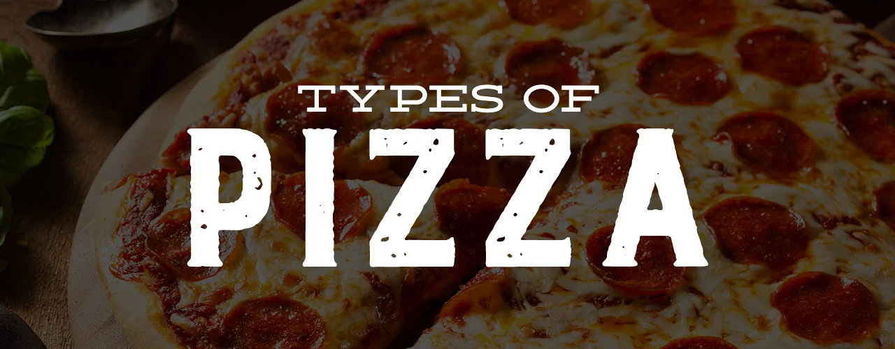

Mmmm…do you smell that? Fresh out of the oven, a steaming pie sits waiting to be eaten. Your senses are overtaken by the aroma of hot bread, melted cheese, and simmering tomato sauce. Are you ready to dig into that favorite of all foods? What are we talking about?Pizza, of course! Some kids like meat, and others don’t. Some kids like vegetables, and others try not to eat them. Some kids love seafood, while others think fish should stay in the sea. But one thing most kids can agree on is this: Pizza is awesome! Where did this much-loved food come from? We often associate pizza with Italian food. But do the Italians get the credit? Or did someone else make the very first pizza? There’s not an easy answer. Different historians have different ideas. A lot depends on how you define “pizza.” Do you think of pizza as a flatbread cooked in an oven? If so, its roots go back to ancient times in the Middle East. The ancient Babylonians, Israelites, and Egyptians all ate flat bread baked in mud ovens. Do you think a pizza has to have toppings? In that case, it dates back to the ancient Greeks and Romans. They both ate baked flatbreads topped with olive oil and spices. Today, we call this dish focaccia bread. What about the pizza most are familiar with? You know, the kind with tomato sauce, cheese, and toppings? That did start in Italy. Specifically, baker Raffaele Esposito from Naples is often given credit for making the first such pizza pie. Historians note, however, that street vendors in Naples sold flatbreads with toppings for many years before then. Legend has it that Italian King Umberto I and Queen Margherita visited Naples in 1889. There, Esposito was asked to make them a pizza. He topped the pizza with fresh tomatoes, mozzarella cheese, and basil. That pizza is still known as Pizza Margherita today. Italian immigrants brought pizza with them to Spain, France, England, and the United States. It didn’t gain popularity until after World War II, though. That’s when returning soldiers looked for the food they had grown to love while fighting overseas.
| Type | Topping |
|---|---|
| I LOVE PIZZA, MEANING: EVEN WHEN I’M IN THE MIDDLE OF EATING PIZZA, I WISH I WERE EATING PIZZA. | |
| Neapolitan Pizza | Features tomatoes, garlic, oregano, and extra virgin olive oil. |
| Chicago Pizza | Generally, the toppings for Chicago pizza are ground beef, sausage, pepperoni, onion, mushrooms, and green peppers, placed underneath the tomato sauce. Some locations will finish off their pizzas with a sprinkle of Parmesan cheese across the tomato sauce. |
| New York-Style Pizza | New York-style pizza usually features tomato sauce and mozzarella cheese. Unlike its thin crust counterpart, the Neapolitan, New York-style pizzas can handle a wide range of additional toppings, from pepperoni and sausage to mushroom and anchovies. While this style of pizza can have virtually any topping added to it, it's common to find pizza lovers topping New York pizza with condiments, like oregano, red pepper flakes, Parmesan cheese, and garlic powder. |
| Sicilian Pizza | Sicilian pizzas are often topped with bits of tomato, onion, anchovies, and herbs. |
| Greek Pizza | Greek pizza is usually heavier on the sauce than the cheese. The sauce typically has a tangy tomato paste with a strong oregano flavor. It is often only topped with cheese, which is usually a mix of mozzarella and cheddar or provolone. It may feature a variety of non-Greek or Greek toppings, such as feta cheese, black olives, and red onion. |
| California Pizza | When it comes to California pizza, there's no such thing as traditional toppings. This lack of specificity allows you to get inventive. You can include anything from chicken and artichokes to goat cheese and egg. |
| St. Louis Pizza and Detroit Pizza | St. Louis pizza features Provel cheese and a sweeter tomato sauce with a hefty dosage of oregano. Because of its firm crust, St. Louis-style pizza can support several toppings of your choice. |
| Detroit pizza traditionally features pepperoni, brick cheese (usually Wisconsin brick cheese), and tomato sauce. Other typical toppings include mushrooms and olives. | |
Pizza styles:
- Fast Food
- Silican Crust
- Chicago Deep Dish
- Cheese Crust
- NY Style